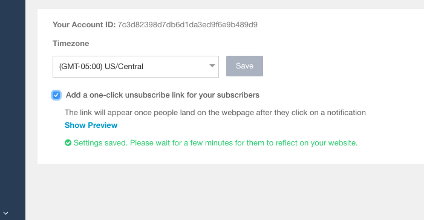

This feature helps the subscriber to unsubscribe with just a click. To activate the one-click unsubscribe, follow the below steps :
Login to your PushCrew account → Click on account settings→ select Add a one-click unsubscribe link for your subscribers.
You can also see this preview by clicking on Show Preview.
Once the user click the notification and One-click unsubscribe is activated, a link will appear on the webpage to unsubscribe from notification .